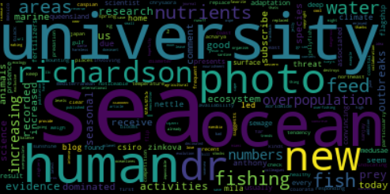
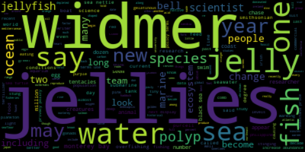
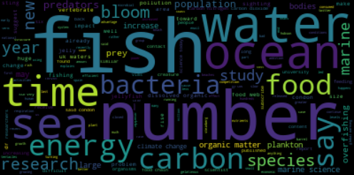
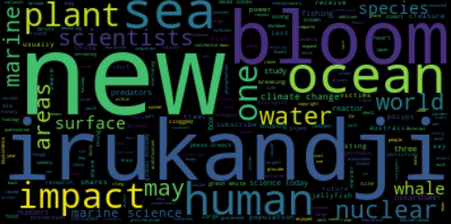
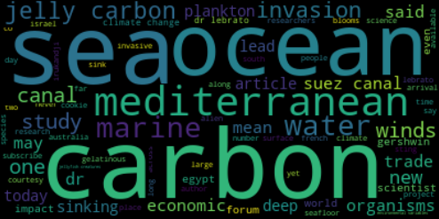
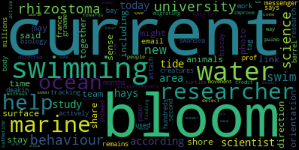
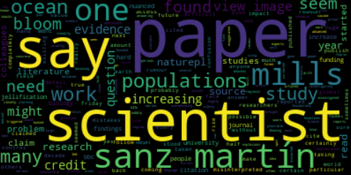
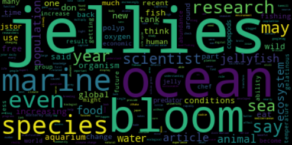
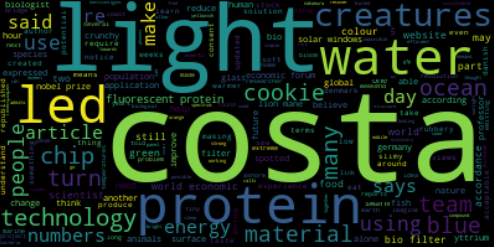
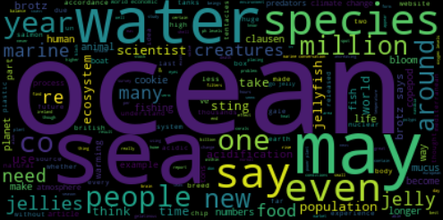

Future with Jellyfish
Data Visualisation
Analysis of the Impact of Jellyfishes
throughout Time

Upon running scrapers that grabs articles related to jellyfish from the past 10 years, the view of humans to jellyfishes as well as their impact to our environment can be summarised in the following points:
- Overpopulation of jellyfish became a problem starting from 2013, where the word "bloom" and "population" became more common, describing the problem.
- Jellyfishes have always been a baffling topic, as seen by the words used throughout the years to describe the studies being done: "university", "dr", "researchers", "scientists", "papers"
- Several scientists have also been in articles talking about jellyfishes, such as "widmer"--Chad Widmer and "sanz-martin"--Marina Sanz-Martin
- You could also see several groundbreaking incidents causing particular jellyfish to be in the news, such as Irukandji Jellyfish in 2013 and the surge of jellyfish in the Mediterranean in 2014
This backs up the general hypothesis that jellyfish became less intriguing but more as a fear for they have been "blooming" and causing problems in the ecosystem. This brings us to our next scene, where jellyfish have become the majority species due to them being able to thrive in polluted environments
Generated WordClouds
 Year 2009 Year 2010
 Year 2011
 Year 2013
 Year 2014
 Year 2015
 Year 2016
 Year 2017
 Year 2018
 Year 2019
Process of Article Scraping
 Running the Scrapers
Running the Scrapers
 Total Number of Articles Scraped
Total Number of Articles Scraped
 Unique Sources
Unique Sources
 Number of Articles per year
Number of Articles per year